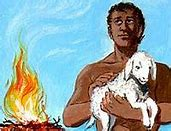

| Dios |
Al ver el Señor que la maldad del ser humano en la tierra era muy grande, y que todos sus
pensamientos tendían siempre hacia el mal, se arrepintió de haber hecho al ser humano en la tierra,
y le dolió en el corazón. Entonces dijo: «Voy a borrar de la tierra al ser humano que he creado. Y
haré lo mismo con los animales, los reptiles y las aves del cielo. ¡Me arrepiento de haberlos
creado!» Pero Noé contaba con el favor del Señor. |
|
| Caín |
Caín fue el primogénito de Adán y Eva, es decir, su primer hijo varón. Y era labrador de la tierra
al igual que su padre Adán. Asesinó a su hermano Abel y por esto fue maldito y anduvo errante por la
tierra. |
|
| Abel |
Su nombre significa "El que estaba con Dios". Es el segundo hijo de Adán y Eva. Fue asesinado por su
hermano
Caín, quien envidiaba la satisfacción divina con las ofrendas de Abel; de acuerdo al relato, el suyo
fue el primer asesinato de un ser humano. |
 |
| Matusalén |
Hijo de Enoc, padre de Lamec y abuelo de Noé (quien fue el último de estos patriarcas). Matusalén es
la persona más longeva en la Biblia con 969 años
|
|
| Noé |
Según los escritos sagrados; fue el décimo y último de los superlongevos patriarcas antediluvianos a
quien Dios mismo le advierte sobre un gran diluvio universal para destruir a todos los seres
vivientes por sus pecados. Creyo en lo que Dios le dijo y por eso construyo un arca para salvar a su
familia y a los animales de este diluvio |
|